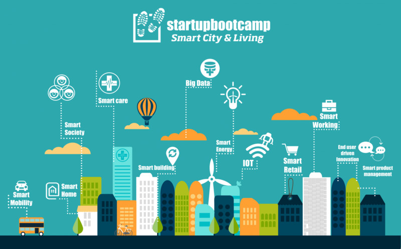

Direccionando hacia la innovación urbana
Por Arq. Ilse Ávila García
11/02/2015
Actualmente el concepto de ciudad inteligente o digital se maneja a nivel global. Muchas ciudades de este tipo se están desarrollando en diferentes lugares del mundo, cada una con su propio sistema, diseño, estructura y organización. Este concepto nace hace dos décadas como respuesta a la problemática de sostenibilidad y a la deficiencia energética. Recientemente se ha ampliado el concepto a la infraestructura de las Tecnologías de Información y Comunicación (TIC´s). La ciudad de Torreón no es ajena a este concepto, cuenta con una gran área de oportunidad para desarrollarse en una forma ordenada y se traduzca en beneficios para sus ciudadanos.
Greenfield afirma, que las ciudades ya son inteligentes sin necesidad de las soluciones tecnológicas que venden IBM, Siemens, Cisco y demás y que esta inteligencia reside en sus ciudadanos. Su invitación es que aquellos que estamos en el diseño y la gestión de la ciudad debemos centrar las acciones en el componente humano de la ciudad. (1)
Una Ciudad Inteligente lo es, utilizando todo el abanico de tecnologías disponibles al servicio de los ciudadanos. Igualmente debe ser capaz de crear empleos, además de tener un sistema de transporte de alta calidad, para así garantizar una buena y cómoda movilidad. A esta lista también se agregan hogares saludables y funcionales, un buen sistema sanitario y educativo, y facilidades en materia de ocio y diversión. (2)
Es un medio innovador que conlleva al progreso de la región donde se localiza geográficamente y a su vez que tenga la fortaleza de competir por un lugar dentro de la red global, Ciudad Digital puede entenderse como un conjunto de soluciones de TIC’s, aplicadas a nivel local, que bajo ciertas condiciones, pueden afectar positivamente todos los sectores de la sociedad en la cual se implementa. (3)
Los aspectos de una Smart City
Recordemos que no existen dos ciudades iguales, todas son diferentes, en cultura, fisonomía, clima, topografía, localización, economía e identidad, de los esfuerzos que lleve a cabo cada ciudad dependiendo de su diagnostico podrá seguir cualquiera de los siguientes aspectos para direccionarse hacia una Ciudad Inteligente:
- Ser sostenible a largo plazo ambiental y económicamente
- Gestionar eficientemente los servicios
- Innovando en recursos materiales y modelos con tecnologías
- Movilidad
- Distribución de servicios urbanos (agua, electricidad, drenaje, comunicación, gestión de residuos)
- Calidad en servicios de educación, salud, emergencias, seguridad, atención a las personas, etc.
América Latina es una región emergente en la que este concepto va ganando terreno y un gran número de ciudades están haciendo un importante esfuerzo por adoptar estos aspectos a su planeación de ciudad, partiendo de los diagnósticos y fortalezas que tienen cada una en especifico definen la visión del aspecto que mejor se adecua a su modelo y decide las estrategias necesarias para lograrlo, de acuerdo a la metodología de “Rueda de ciudades inteligentes” (desarrollada por Boyd Cohen) enlistamos algunos: (4)
| Aspecto | Indicadores |
|---|---|
| Gente Inteligente | creatividad, sociedad inclusiva, educación del s. XXI |
| Ambientalmente Inteligente | edificios autosostenibles, energía renovable, planeación urbana ecológica |
| Vida Inteligente | saludable, segura, culturalmente vibrante y alegre |
| Economía Inteligente | emprendimiento e innovación, productividad, interconexión local y global |
| Gobierno Inteligente | habilita políticos de oferta y demanda, transparencia y acceso a la información, gobierno en línea |
| Movilidad Inteligente | accesibilidad, transportes ecológicos, integral |

Por otra parte, se realizó una evaluación con la mencionada metodología para identificar a las ciudades inteligentes de América Latina dónde sobresalen las siguientes capitales:
- Santiago de Chile, Chile
- Ciudad de México, México
- Bogotá, Colombia,
- Buenos Aires, Argentina
- Rio de Janeiro, Brasil
La importancia de las ventajas competitivas externas, asociadas con la productividad, la concentración, oferta de factores productivos, las condiciones de la demanda, derivadas del potencial de mercado y de la estructura económica urbana que, en cierto sentido, favorecen a algunas de las ciudades ubicadas en el rango de ciudades intermedias, en México están capitalizando estos aspectos ciudades como Querétaro, León, Monterrey y Guadalajara, las cuales se ejemplifican brevemente a continuación:
Querétaro: En esta ciudad se construye el complejo inteligente Ciudad Maderas, en el municipio el Marqués cerca de la autopista México-Querétaro. Será el primero en su tipo en el país, con una superficie de casi 400 hectáreas, incluye: empresas tecnológicas, hoteles, universidad, vivienda residencial, así como el uso de energías sustentables como la eólica y la solar; vincula diversos aspectos de la vida a internet, los colonos podrán tener App´s en sus teléfonos móviles, sobre los servicios como transporte, recolección de basura, agua, luz, gas. Las viviendas contarán con sensores para la lectura de humedad, temperatura, el complejo contará en su totalidad con acceso a internet.
León Guanajuato: Es una ciudad intermedia que ha trabajado mucho en una planeación a largo plazo, apostando en un inicio a la movilidad, redefiniendo el desarrollo urbano como un componente de desarrollo económico para mejorar la eficiencia de la ciudad y la calidad de vida de sus ciudadanos, aunado a la prestación de servicios electrónicos y la biblioteca virtual.
Monterrey: El Tecnológico de Monterrey impulsa el proyecto “Distrito Tec” en 2012 de re-densificar los espacios urbanos donde se localizan sus campus, el 22% de la población ha dejado de vivir ahí; iniciando como plan piloto en el campus de la ciudad de Monterrey N.L. El plan maestro inició en 2013 analizando la problemática para consensar con los vecinos y llegar a una solución conjunta. Actualmente se encuentra en fase arquitectónica, está conformado por 437 has, 17 colonias, 8,800 viviendas y 17,000 habitantes. Es un proyecto a 20 años, la visión estratégica de este proyecto va encaminada a fortalecer las capacidades generadoras de investigación. (5)
Guadalajara: Desarrolla el plan maestro “Ciudad Creativa Digital” que contempla cinco áreas de desarrollo como son diseño urbano, infraestructura, movilidad, sustentabilidad ambiental y tecnología en el Centro Histórico de la ciudad. Tiene como objetivo potencializar el ecosistema emprendedor en la industria creativa en empresas en etapa temprana con alto potencial de valor agregado, en un modelo de negocio claro y un mercado identificado de crecimiento o escalamiento global.
Las ciudades inteligentes van mas allá de querer ligar un proyecto tecnológico o digital, es un conjunto de elementos que trabajan entre si de una manera competitiva y sostenible que garantice el crecimiento económico, bienestar social y la calidad de vida a sus habitantes. No todas las ciudades parten de las mismas premisas, deben mantener su identidad y la posibilidad de que sus ciudadanos se identifiquen con ella, para ello se deben conocer a profundidad sus necesidades y entender cómo funciona, para ofrecer una visión clara partiendo de las fortalezas con una integración de sustentabilidad, desarrollo económico, políticas públicas, ordenamiento territorial, movilidad y desarrollo social. Una ciudad con servicios de calidad que generen confiabilidad, seguridad, utilidad. Debemos trabajar para lograr. (6)
La Ciudad de Torreón, enfrenta retos y grandes oportunidades ante las Smart Cities: la identificación de la vocación como región, aprovechando y direccionando la amplia gama de oferta educativa que es necesario enfocar para la generación de conocimiento, uso de Tecnologías y comunicaciones, impulsando el emprendimiento y la innovación, para incentivar el desarrollo económico. Aprovechar la productividad como una fortaleza de la región, brindando incentivos a los proyectos sustentables y en armonía con el medio ambiente, mantener un gobierno transparente, espacios públicos de calidad con acceso a servicios digitales, programas que fomenten una vida saludable y promuevan una identidad cultural, infraestructura de gran escala, conectividad y movilidad incluyentes amables con el peatón y medios de transporte no motorizados.
- Adam Greenfield, (2013) Adaptado de “Against the Smart City” investigador de London School of Economics.
- Adaptado de Fadela Amara (2010).
- Adaptado de CiberSociedad.net
- Adaptado de Estudio Social las 8 ciudades más inteligentes de América Latina.
- Adaptado de Periódico Reforma fecha. 28.07.14 sec. Suplemento pag. 4-10.
- Adaptado de CONCYTEG.gob.mx.